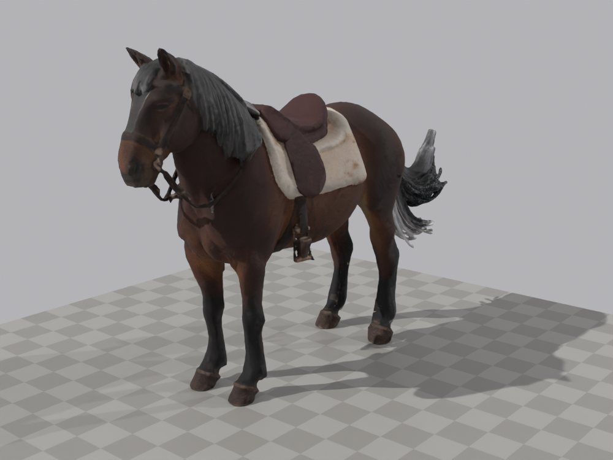

Trois files de travail avancent en parallèle, avec l'accord du directeur (questionnaire du 02/10/2026). Le Chef lance le ticket suivant d'une file dès que le précédent est validé ; chaque ticket a un exécutant et un vérificateur. Cette page est mise à jour à chaque ticket validé.
Mise à jour : 06/10/2026 à 05:54
Résumé
2 à faire13 validés
Trois files : Unreal, modèles 3D sans Unreal, documents. Le chien entre dans le jeu cette nuit.
Décisions de la nuit : D-226 à D-230.D-226, le ciel ; D-227, la brume et le chien blessé ; D-228, le prototype est la base du jeu complet ; D-229, les consciences collectives ; D-230, la portée de D-228 : toutes les règles du prototype valent pour le jeu complet, sauf exceptions.
Unreal : le ciel, la lune et la météo, avec la brume de D-227 (T-0127), puis la lumière des Gorges et l'aire de la horde (T-0129) sont validés. La horde (T-0130) est validée ; suivront les limites de la zone, puis le chien et le loup dans le jeu.
Modèles 3D : le loup recuit, dont la vidéo a été refaite, et les quatre marches boiteuses du chien (T-0128) sont validés, comme l'araignée et la chauve-souris (T-0133) : tous sont dans « Modèles 3D ». Le chien a maintenant 21 animations. Le cheval (T-0134) est validé ; le gibier (T-0135) est en cours.
Documents : la file est terminée. T-0136, T-0137, T-0139, T-0140 et T-0141 sont validés, et Documents/ est aligné jusqu'à D-230.
15 questions attendent le directeur à son « bonjour », en bas de page.
Les files de travail
Chaque file avance dans l'ordre. Règles de la nuit : un seul agent à la fois dans Unreal ; le verrou est obligatoire pour tout gros calcul, sur la carte graphique comme sur le processeur ; rien sur C: ; jamais de push ; licences commerciales seulement.
File A : Unreal
Dans E:\aaa-proto\unreal-v2. Le jeu se lance depuis paquets\lancement.
T-0127 · P1-23 · D-187 · D-226 · D-227
Cycle du jour, lune et météo
Le soleil, la lune et la nuit ; temps clair, brume et pluie, avec des transitions douces.
Validé
Livré à 19:30 avec D-226, renvoyé en correction à 19:41, correction 2 livrée à 21:03 avec la brume de D-227 (un ennemi lisible à 25 m ; la brume du réveil se lève quand le héros est monté de 15 m, ou au bout de 10 min). Validé à 21:19.
T-0129 · P1-03 · D-226
Lumière des Gorges et du belvédère
Accordée au ciel de D-226 ; l'aire de la horde.
Validé
Livré à 01:32, renvoyé en correction, validé à 03:04 : contre-jour du belvédère de 1,2 à 8 min de jeu ; aire de la horde, 12 places ; nuit des Gorges à 0,076, sol et héros visibles.
T-0130 · P1-14 · D-222
La horde
Une taille selon l'espèce, en partant des nombres « Moyen » : horde de 8 à 12, nid de 4 à 6.
Validé
Livré à 06:34, renvoyé en correction (créatures sur l'eau), validé vers 08:30 : aire en (-249,5 ; -20,5), 12 places au sec ; 117 à 149 images/s.
T-0131 · P1-05 · P1-19
Limites de la zone et patrouille
Parois non grimpables aux limites (à retirer après la livraison) et patrouille au-delà du ravin.
À faire
T-0132 · P4-14 · D-224 · D-225 · D-227
Le chien et le loup dans le jeu
Le loup recuit à l'enclos. Le chien suit le héros ; sa loyauté a trois rôles, à 35 et 70 : il aide sans attaquer, puis attaque et distrait, puis combat. Pas de mort définitive : blessé, il se met à l'abri et revient après un repos. La patte qui boite suit la blessure, deux pattes au plus.
À faire
Ensuite : le paquet de nuit, et le parcours lancé sur ce paquet.
File B : modèles 3D, sans Unreal
Dans E:\aaa-proto\gen3d et E:\aaa-proto\essai. Chaque modèle validé s'ajoute à la page « Modèles 3D », puis à cette page.
T-0128 · D-225 · D-227
Teinte du loup et marches boiteuses du chien
Le loup recuit sans l'assombrissement de sa première cuisson ; des marches boiteuses pour le chien.
Validé
Livré à 18:14, renvoyé en correction vers 19:45, livré de nouveau à 20:56 (vidéo du loup refaite, quatre boiteries), validé à 21:07. Page « Modèles 3D » republiée.
T-0133 · D-220
Araignée géante et chauves-souris
L'araignée de la mine, qui combat ; la nuée de chauves-souris, qui s'envole sans combattre.
Validé
Livré à 22:56, renvoyé en correction (textes), validé à 23:24. Publiés dans « Modèles 3D » à 23:43.
T-0134 · D-184 · D-194
Le cheval de la monture
Pas, trot et galop.
Validé
Livré à 01:32, quatre corrections (sabots qui glissaient, appuis cassés, cadence et sabots posés comme dans le pack, galop). Validé vers 09:00. Défauts déclarés : glissement entre clés, à régler en calant les sabots au sol dans Unreal ; jambes qui se croisent au saut.
T-0135 · D-218
Le gibier
Sanglier, lapin et oiseaux.
Validé
Lancé à 01:32. Correction 1 reprise le 06/10/2026 par un agent neuf, puis validée à 05:25 (voir la page « Jour 06 »).
File C : documents, sans carte graphique
Le rédacteur de design reporte les décisions dans Documents/, puis le gardien du lore vérifie la cohérence. La file est terminée : Documents/ est aligné jusqu'à D-230.
T-0136
Décisions D-175 à D-199
Reportées dans les documents de design qu'elles corrigent.
Validé
Validé à 19:39. La plupart de ces décisions étaient déjà reportées (Mission 7) ; la partie « prototype » est ajoutée au GDD. Six contradictions relevées.
T-0137
Décisions D-200 à D-227
Reportées dans les documents de design qu'elles corrigent.
Validé
Renvoyé en correction à 19:56 (quatre petites erreurs), validé à 20:02. Treize points relevés.
T-0139 · D-228 · D-229
Décisions D-228 et D-229
Le prototype comme base du jeu complet ; les consciences collectives.
Validé
Validé à 20:29, après une correction.
T-0140 · D-230
Décision D-230
La portée de D-228 et ses précisions.
Validé
Validé à 20:53, après une correction : D-230 dans 13 documents.
T-0141 · D-204 · D-214 · D-216 · D-221 · D-226
Alignement des documents restés en dehors
Mettre en accord les documents restés en dehors des reports, sans nouvelle décision.
Validé
Validé à 21:00 : 8 documents alignés. Restent des points mineurs pour un prochain ticket de documents.
Hors file : la page de la nuit
Demandée par le directeur le 02/10 : une page par nuit et par jour dans « Pages du projet ».
T-0138
Pages de nuit et de jour
Le générateur des pages de nuit et de jour, et cette page.
Validé
Livré, renvoyé en correction (état des tickets en retard), validé à 06:44. Cette page en est le résultat.
Modèles 3D de la nuit
Touchez l'image d'un modèle pour ouvrir sa fiche dans la page « Modèles 3D », où on peut le faire tourner et jouer ses animations. Un modèle pas encore validé porte l'état « En vérification » et n'a pas encore de fiche. Le gibier s'ajoute ici une fois livré.
Image de la vidéo à 0:21 : la patte avant gauche, levée, est la patte blessée.
Quatre marches boiteuses, une par patte : avant gauche (Walk_Limp, D-225), arrière gauche, avant droite et arrière droite (D-227). Chacune fait 33 images (1,33 s) et boucle sans saut ; la patte blessée a un appui court et se lève plus haut. Dans le jeu, la patte qui boite suivra la blessure, deux pattes au plus (D-227). Le collier est gardé (D-225).
En haut, le loup avant la correction ; en bas, le loup recuit.
Les textures du loup sont recuites sans l'assombrissement venu du métal de son modèle de départ. Sa teinte passe de 0,80 à 0,98 de l'image de départ. La forme, le squelette et les 12 animations validées ne changent pas.
Bête de combat des galeries de la mine (D-220). Taille proposée : 2,50 m de large, pattes comprises. Sept animations faites par programme, car aucune araignée animée libre de droits n'existe : attente, marche, course, attaque, bond, blessée, mort. Défauts déclarés : le moignon d'une 9e patte, des pattes qui se touchent à la course et à la mort, de la peau étirée.
Dans les galeries de la mine, une nuée de chauves-souris s'envole sans combattre (D-220). Un modèle léger, avec un battement d'ailes en boucle, fait pour être répété en nombre. La nuée elle-même (nombre, trajectoires, déclenchement) se fera dans Unreal.
Sur le PC : E:\aaa-proto\essai\chauves-souris\ (chauve_souris.glb, chauve_souris.fbx, chauve-souris-presentation.mp4, LISEZMOI.md)
Cheval de la monture
Validé
T-0134 · D-184 · D-194

Le corps fixe, de trois quarts, sellé.
Le cheval que le hameau offre au héros, pris aux déserteurs de l'Ordre (D-184). Trois allures : pas, trot et galop (D-194) ; 14 animations. Marque proposée : un sceptre sans croix sur la cuisse arrière gauche (question pour le directeur). Sa fiche s'ajoutera à « Modèles 3D » prochainement (ticket validé).
Sur le PC : E:\aaa-proto\essai\cheval\ (cheval.glb, cheval.fbx, cheval-presentation.mp4, LISEZMOI.md)
Gibier : sanglier, lapin et oiseaux
Validé
T-0135 · D-218
Livré pendant la nuit, corrigé et validé le 06/10/2026 : voir la page « Jour 06 », où sont le sanglier, le lapin et la perdrix grise.
Journal
Décision D-225 (le chien et la teinte du loup). Lancement de T-0128 : teinte du loup et marche boiteuse du chien.
T-0128 livré : loup recuit, marche boiteuse du chien, page « Modèles 3D » mise à jour sans être publiée. En vérification.
Décision D-226 (le ciel). T-0127 reprend pour l'appliquer.
Départ de la nuit en trois files, avec l'accord du directeur. Lancés : T-0133 (araignée et chauves-souris) et T-0136 (décisions D-175 à D-199).
Lancement de T-0138 : le générateur des pages de nuit et de jour, et cette page.
T-0127 livré avec D-226 : journée de 72 min, lune à phases sur 15 journées, brume surtout le matin. En vérification.
T-0136 livré : les décisions D-175 à D-199 étaient déjà presque toutes dans Documents/ ; trois manques comblés dans le GDD. En vérification.
Décision D-227 (brume et chien blessé), après le questionnaire du directeur. Elle tranche les questions du début de nuit.
T-0136 validé. Lancement de T-0137 : les décisions D-200 à D-227.
T-0127 renvoyé en correction : certaines captures du belvédère ne montrent pas le code livré (la lune a changé avec D-226). Sa correction 2 reçoit aussi la brume de D-227.
T-0128 renvoyé en correction : la vidéo du loup est à refaire avec la caméra de la première moitié ; des LISEZMOI sont à remettre d'accord, avec D-227.
T-0137 livré, puis renvoyé en correction : quatre petites erreurs dans Documents/ et un oubli dans le rapport.
T-0137 validé après correction : les décisions D-200 à D-227 sont dans Documents/.
Décisions D-228 (le prototype est la base du jeu complet : ses règles valent aussi pour le jeu) et D-229 (consciences collectives ; la pause en coop reste ouverte), après un questionnaire du directeur sur les points de T-0136 et T-0137. Lancement de T-0139 pour les reporter.
T-0128 : la vidéo du loup est refaite avec la caméra de la première moitié.
Décision D-230 (portée de D-228) : toutes les règles du prototype valent pour le jeu, sauf exceptions ; partage du jour selon la saison ; lisibilité selon l'épaisseur de la brume ; méfiance dans tout hameau ; le Pont revient au checkpoint ; paliers nommés du chien, sans biome. T-0139 livré, en vérification. T-0138 livré, en vérification.
T-0139 validé après une correction. Lancement de T-0140 : la décision D-230.
T-0128 : la vidéo du chien est refaite, avec 21 animations, dont une marche boiteuse par patte (D-227).
T-0140 validé après une correction : D-230 dans 13 documents. Lancement de T-0141 : l'alignement des documents restés en dehors.
T-0128 livré après sa correction 1. En vérification.
T-0141 validé : la file des documents est terminée. Documents/ est aligné jusqu'à D-230.
T-0127 livré après sa correction 2, avec la brume de D-227. En vérification.
T-0138 renvoyé en correction : le contenu de cette page est à remettre à l'état réel.
T-0128 validé après sa correction 1 : loup recuit (teinte à 0,98 de sa source), quatre boiteries du chien. Page « Modèles 3D » republiée.
T-0127 validé (ciel, D-226 et D-227). Lancement de T-0129 : la lumière des Gorges et du belvédère, l'aire de la horde.
T-0133 livré : l'araignée géante (7 animations faites par programme) et la chauve-souris (battement d'ailes en boucle). Lancement de T-0134 : le cheval.
T-0133 renvoyé en correction : des textes, et le contrôle de la chauve-souris à refaire depuis sa pose de repos.
T-0133 validé.
Araignée et chauve-souris publiées dans « Modèles 3D » : 16 modèles, 41 animations.
T-0129 et T-0134 livrés. Lancement de T-0135 : le gibier.
T-0134 renvoyé en correction : des sabots tenus à 6 mm du sol glissaient.
T-0134 renvoyé en correction une 2e fois : des appuis cassés et un saut du sabot au pas.
T-0129 validé après une correction : nuit des Gorges à 0,076, sol et héros visibles. Lancement de T-0130 : la horde.
T-0134 livré après sa correction 2. En vérification.
T-0138 livré de nouveau, avec cette page à jour. En vérification.
T-0130 (la horde) livré. En vérification.
T-0134 (le cheval) renvoyé pour une 3e et dernière correction.
T-0138 validé : cette page est publiée dans « Pages du projet ».
T-0130 (la horde) validé.
T-0134 (le cheval) validé après quatre corrections.
Questions pour le directeur
Posées au directeur par questionnaires le 06/10/2026 : les réponses sont les décisions D-232 à D-236, résumées sur la page « Jour 06 ».
15 questions attendent leur réponse. Personne ne les tranche à la place du directeur.
Saison moyenne (D-230 (2)) : le jeu n'a que deux saisons (la Brûlure, le Grand Gel). Le partage 48/24 est-il le point de passage entre les deux, ou faut-il des intersaisons ?
à confirmer
(Réglés par le Chef en lisant les décisions à la lettre, à confirmer en passant.) Règles non classées par D-230 (1) : celles qui se disent « prototype » sont des exceptions ; les autres (visages des PNJ, +20 % et vivandier, surnoms par stade, modèle et IA du chien) valent pour le jeu. Meutes : les nombres de D-222 valent pour la zone de départ, et les autres groupes se règlent espèce par espèce (meute de 6, meute de 5).
Fin de la méfiance : « premier service rendu » (D-230 (4)) ou « première quête réussie » (D-215 (1)) ? « Paria » vaut-il seulement pour le hameau de départ, ou pour tout hameau ?
Chien et loup : la terreur du Stade 3, les trois voies d'évolution et le Hurleur Trahi valent-ils aussi pour le chien, ou seulement pour le loup ?
T-0141
La Tempête de Neige et sa meute de 6 peuvent-elles toucher la zone de départ ?
T-0127
La brume couvre presque tout le belvédère (capture 6-brume) : est-ce gênant pour sa vue ? La brume du réveil qui se lève à la sortie des Gorges (+15 m) ou au bout de 10 min te convient-elle ? La lune suit maintenant l'ordre réel des phases.
T-0127
La brume revient vers 12 à 16 min de jeu et cache toute la vue du belvédère (capture 6-brume au lieu de l'image 13). T-0129 mesure les options.
T-0133
La taille de l'araignée et des chauves-souris ; la lisibilité d'une araignée sombre dans les galeries ; une marche blessée pour l'araignée ; sa façon de combattre ; une pose suspendue et un envol pour la nuée.
T-0129
La brume revient au belvédère dans environ 5 à 8 % des parties (3 options mesurées dans le rapport) ; l'heure d'arrivée prévue au belvédère ; 3 valeurs de T-0127 changées (à confirmer).
T-0134
La marque de la monture (proposée : un sceptre sans croix sur la cuisse arrière gauche) ; la vitesse des allures (D-196) ; aucune animation libre de monte ni de descente n'existe ; l'allure générale du cheval.
T-0127 · T-0128 · D-227
La brume, le premier réveil, la mort du chien et sa patte qui boite.
Réponse du directeur : Tranchées par D-227 (questionnaire du 02/10) : un ennemi reste lisible jusqu'à 25 m dans la brume, puis devient de moins en moins visible ; la partie commence dans la brume du matin ; le chien ne meurt pas définitivement ; la patte qui boite suit la blessure, deux pattes au plus.
T-0137 · D-226 (2)
La journée de 72 min vaut-elle aussi pour le jeu complet, ou seulement pour le prototype ?
Réponse du directeur : Pour le jeu complet aussi (D-228 (1)) ; le partage du jour et de la nuit varie avec la saison (D-230 (2)).
T-0136 · T-0137
Les contradictions relevées dans Documents/ : six par T-0136, treize par T-0137.
Réponse du directeur : Présentées par questionnaires le 02/10 : D-228 et D-229, puis D-230 pour la portée de D-228.
T-0130
La horde : à quel moment se déclenche-t-elle ?
T-0130
La horde : 12 créatures, est-ce la bonne taille ?
T-0130
La horde doit-elle pouvoir être battue, ou être impossible à battre, comme le scénario de l'Ange le laisse entendre ?
T-0130
La horde a été resserrée pour tenir dans le grand sort : cela vous convient-il ?
T-0130
Environ 5 créatures bloquées par combat sont replacées, et cela se voit : est-ce acceptable pour la démo ?
Sur le PC
E:\aaa-proto\essai\ : dossiers chien, loup, araignee, chauves-souris et cheval (modèles, vidéos, LISEZMOI) · E:\aaa-proto\unreal-v2 (le jeu) · D:\aaa-game\.equipe\taches (les tickets) · D:\aaa-game\.equipe\bilans\nuit-03.md (le bilan de la nuit)